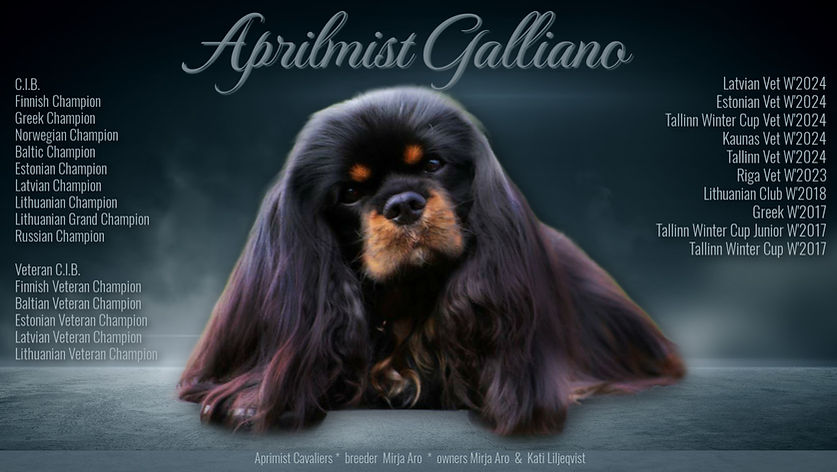
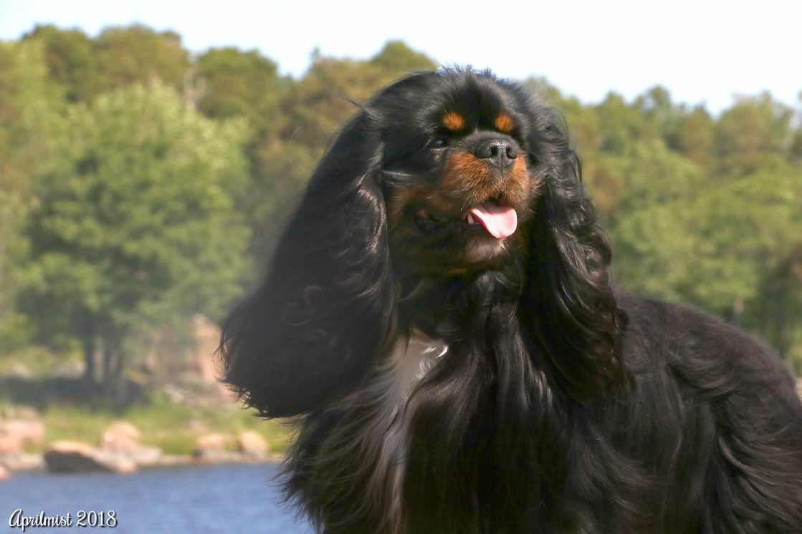
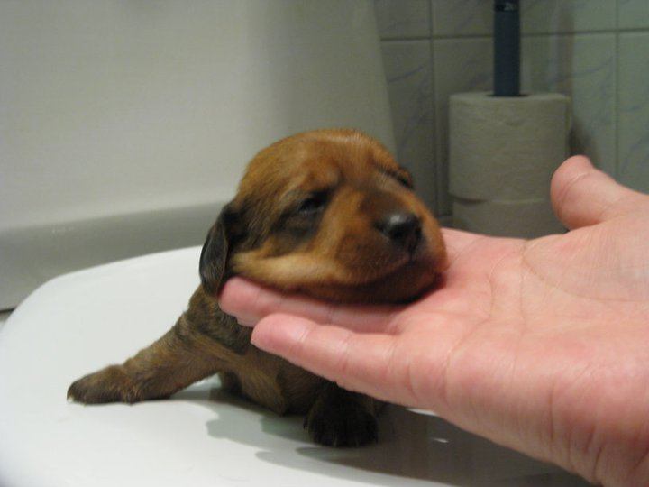
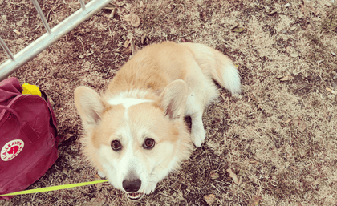

Mikael
Elämä ilman koiraa tuntuisi itselleni täysin oudolta. Ensimmäinen koirani muutti meille, kun olin vain neljävuotias ja siitä lähtien koiria on tullut vain lisää. Ensimmäinen koirani oli cavalier kingcharlesinspanieli, jonka nimi oli Vili, koska no hän oli hyvin villi. Muistan kuinka juoksin häntä karkuun, kun ensimmäisenä saimme hänet, koska Vili juoksi koko talon ympäri niin kovalla vauhdilla. Vilin kanssa äitini kävi näyttelyissä, sekä hieman agilityn. Vilistä tuli monen maan muotovalio, mutta itselleni hän oli rakkain koira, jonka kanssa pystyin aina tuntemaan rakkautta.  Kuitenkin Vili ei ollut ainoa koira, joka saatiin. Seuraavaksi meille tuli Namu ja hieman sen jälkeen uutena pentuna Noki. Seuraavina vuosina Vilin ja Nokin kanssa käytiin useissa näyttelyissä ja Noki aloitti myös agilityn. Namu oli meillä täysin kotikoira, mutta Nokista tiedettiin heti, että hän on huippu koira, joka varmasti pääsee pitkälle. Nokista tuli kahdeksan maan muotovalio ja kävi jopa Kreikassa asti hakemassa voiton jo ennen kuin hänestä tuli veteraani. Nokin jälkeen saimme jälleen uuden koiran nimeltä Jeti. Jeti on hyvin omaperäinen tapaus, mutta silti tietenkin hyvin rakas. Jeti on hyvin epäsosiaalinen koira ja tykkää vain elää omaa elämäänsä ja toimii tietyllä rutiinilla ja jos se menee pieleen, niin se on kuin maailmanloppu. Valitettavasti koirat eivät elä ikuisesti ja Namun aika oli päättynyt. Hieman tämän jälkeen myös Vilin aika oli päättynyt, joka vaikutti itseeni paljon. Tämän jälkeen äiti halusi taas kolmannen koiran, joka ei ollutkaan cavalier vaan sen sijasta Amerikan cockerspanieli nimeltä Onni. Kävimme hakemassa Onnin kahdeksan viikkoisena viime vuonna ja tiesin heti, että Onni tulee olemaan itselleni hyvin rakas. Onnin kanssa on jo nyt tullut monia rakkaita hetkiä ja hän usein tykkää herättää minut, sekä käymme usein juoksulenkeillä ulkona. Ylipäätänsä, vaikka meidän koiramme käyvät näyttelyissä niin silti tärkeintä on, että koiranelämä on helppoa ja mukavaa kotona. 
Tuomas
Minulta on monesti kysytty, miten Pätkän oppi ensimmäiset temppunsa, joten ajattelin pyhittää tämän päiväisen tekstini siihen miten se ensimmäinen temppu, istuminen, luonnistui Pätkän kanssa. Oma koulutusmetodi pohjautuu positiiviselle vahvistamiselle, ja sen näkökulman muistamisella, että miten koira "hoksaa" asioita. Istumisen esimerkissä tämä näkyi sillä, että pidin Pätkälle herkkua nenän edessä, ja liikutin sitä samalla niin, että hänen täytyi luonnollisesti istuutua pysyäkseen tasapainossa. Tähän yhteyteen sanoin käskysanan "istu" ja annoin herkun. Ja tätä kun toistaa, niin koiralle vähitellen selkiytyy yksinkertainen malli asioiden kausaliteetista: "Toi iso tolvana sanoo jotain ja minä isken peppuni maahan, niin saan hyvää". Mutta tässäkin on hyvä muistaa, että koira ei pysty päättelemään mitä sinä haluat, vaan sinun kouluttajana pitää ns. "huijata" koira tekemään vahingossa se mitä haluat, ja sitten lähteä vahvistamaan sitä systemaattisesti. Ja Pätkän tapauksessa tämä vaati paljon herkkuja, aikaa ja eritoten kärsivällisyyttä, joten ole varautunut ja lopussa palkinto seisoo. Tai no, istuu. 
Tommi
Pojat viettävät suurimman osan päivästä kahdestaan kotona, yleensä heti kotioven
takana odottelemassa.
Erityisesti pentuaikoina Joda oli todella kova poika syömään jalkalistoja, lähinnä stressin takia, mutta se
saatiin kuriin melko nopeasti, mutta se vaati kyllä paljon työtä.
Rotuna shetlanninlammaskoira on kauhean energinen, joten 8-9h työpäivä on pennulle todella pitkä aika olla
ilman valvontaa.
Omakohtaisesta kokemuksesta voin sanoa, että "pureskelua estävät" suihkeet eivät todellakaan toimi! Ehkä joku
päivä voisi ideoida oman version, josta olisi aidosti hyötyä.

Hankimme Uunolle "pikkuveljen", koska hänen näkönsä on kaihin myötä heikentynyt huomattavasti. Silmälääkärin
mukaan Uunon näkö on hävinnyt lähes 80%:sti, mutta toisen koiran läsnäolo on selvästi piristänyt häntä!
Voin siis ainakin itse suositella useampaa koiraa todella lämpimästi, koska tutkimustenkin mukaan koirat
elävät huomattavasti pidempään, kun heillä on kaveri jonka kanssa leikkiä silloin, kun ihmiset ovat muualla.
Seuraavassa postauksessa voinkin kertoa mitkä ovat ensimmäiset uhkakuvat kaihiin liittyen, mitä kannattaa
seurata, mistä sen voi itse havaita ja miten koiran persoona muuttuu näön heikentyessä.
.png )